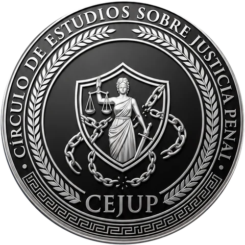

Nullum crimen, nulla poena sine lege Principio de legalidad
Círculo de Estudios sobre Justicia Penal
El repositorio del CEJUP: artículos por líneas de investigación, análisis de las reformas del mes, derecho comparado y periodismo jurídico, elaborados por estudiantes de Derecho de la Universidad Científica del Sur.
06Líneas de investigación
03Secciones
2026Año de fundación


Repositorio
Ver todo el repositorio
Publicaciones destacadas
Líneas de investigación
Los ejes de nuestra investigación
Cada artículo del repositorio pertenece a una de nuestras seis líneas. Elige una para ver sus trabajos.
Secciones
Formatos de análisis
Tres secciones permanentes para seguir el Derecho Penal en el Perú y en el mundo.
Posicionarnos como un referente académico nacional en el estudio, investigación y debate de las ciencias penales.Visión del CEJUP
Sobre el CEJUP
Un círculo de estudiantes de Derecho
El Círculo de Estudios sobre Justicia Penal es una organización estudiantil autónoma de la carrera de Derecho de la Universidad Científica del Sur, constituida en 2026.
- Actividades académicas y prácticas en Derecho Penal y Procesal Penal.
- Investigación jurídica en temas penales relevantes y de actualidad.
- Redes con instituciones y profesionales especializados.
- Una cultura de ética, responsabilidad y excelencia.